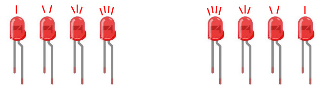

Chapter 4 Analog & PWM
In previous study, we have known that one button has two states: pressed and released, and LED has lighton/off state, then how to enter a middle state? How to output an intermediate state to let LED “semi bright”? That’s what we’re going to learn. First, let’s learn how to control the brightness of a LED.
Project 4.1 Breathing LED
Breathing light, that is, LED is turned from off to on gradually, and gradually from on to off, just like “breathing”. So, how to control the brightness of a LED? We will use PWM to achieve this target.
Component List
Raspberry Pi Pico W x1
830 Tie-Points Breadboard x1
LED x1
Resistor 220Ω x1
Jumper Wire Several
Connect
This circuit is the same as the one in engineering Blink.

Sketch
This project is designed to make PWM output GPIO2 with pulse width increasing from 0% to 100%, and then reducing from 100% to 0% gradually.

Download the code to ESP32-S3 WROOM, and you’ll see that LED is turned from on to off and then from off to on gradually like breathing.
Code
The following is the program code:
#define PIN_LED 2 //define the led pin
#define CHN 0 //define the pwm channel
#define FRQ 1000 //define the pwm frequency
#define PWM_BIT 8 //define the pwm precision
void setup() {
ledcAttachChannel(PIN_LED, FRQ, PWM_BIT, CHN); //attach the led pin to pwm channel
}
void loop() {
for (int i = 0; i < 255; i++) { //make light fade in
ledcWrite(PIN_LED, i);
delay(10);
}
for (int i = 255; i > -1; i--) { //make light fade out
ledcWrite(PIN_LED, i);
delay(10);
}
}
Project 4.2 Meteor Flowing Light
After learning about PWM, we can use it to control LED bar graph and realize a cooler flowing light. The component list, circuit, and hardware are exactly cons istent with the project Flowing Light.
Component List
Raspberry Pi Pico W x1
830 Tie-Points Breadboard x1
LED Bar Graph x1
Resistor 220Ω x8
Jumper Wire Several
Connect

Sketch
Meteor flowing light will be implemented with PWM.

Download the code to ESP32-S3 WROOM, and LED bar graph will gradually light up and out from left to right, then light up and out from right to left.
Code
The following is the program code:
const byte ledPins[] = {21, 47, 38, 39, 40, 41, 42, 2}; //define led pins
const byte chns[] = {0, 1, 2, 3, 4, 5, 6, 7}; //define the pwm channels
const int dutys[] = {0, 0, 0, 0, 0, 0, 0, 0,
1023, 512, 256, 128, 64, 32, 16, 8,
0, 0, 0, 0, 0, 0, 0, 0
}; //define the pwm dutys
int ledCounts;
int delayTimes = 50; //flowing speed ,the smaller, the faster
void setup() {
ledCounts = sizeof(ledPins); //get the led counts
for (int i = 0; i < ledCounts; i++) { //setup the pwm channels
ledcAttachChannel(ledPins[i], 1000, 10, chns[i]);
}
}
void loop() {
for (int i = 0; i < 16; i++) { //flowing one side to other side
for (int j = 0; j < ledCounts; j++) {
ledcWrite(ledPins[j], dutys[i + j]);
}
delay(delayTimes);
}
for (int i = 0; i < 16; i++) { //flowing one side to other side
for (int j = ledCounts - 1; j > -1; j--) {
ledcWrite(ledPins[j], dutys[i + (ledCounts - 1 - j)]);
}
delay(delayTimes);
}
}